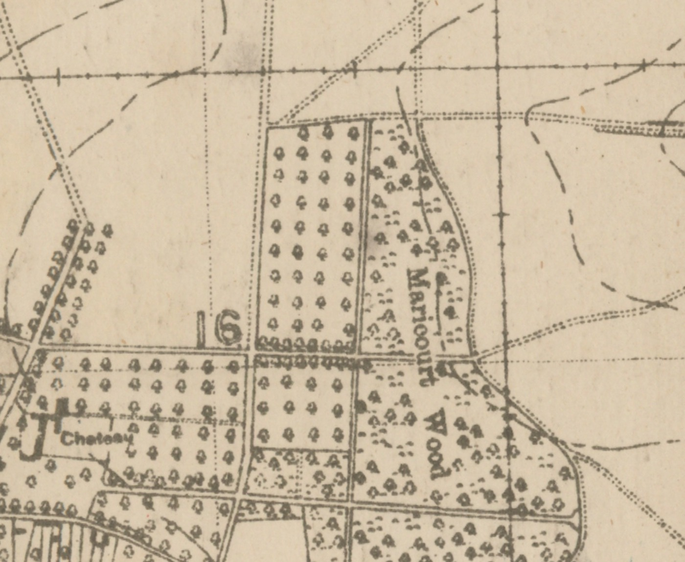
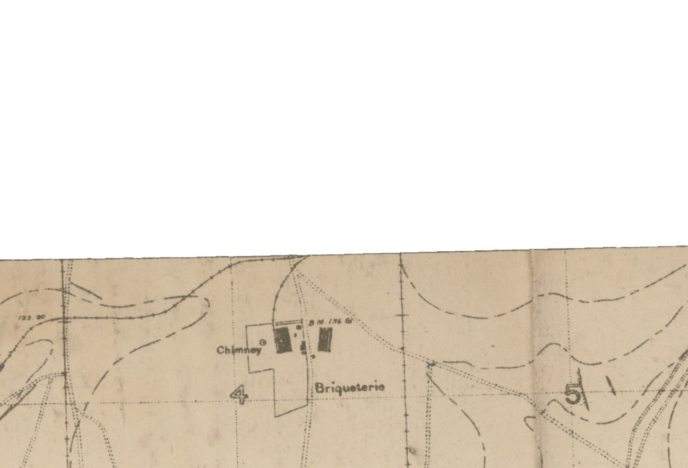

A first edition · a note from Chartwell · a battlefield
Open the book. Then walk the ground.
The package is not a catalogue. It is a route: from a one-sentence letter in Volume I,
back through July 1916, and forward to what is still missing.
Readme.md · Ground Truth Ledger · No speculation
Churchill’s Chartwell stationery, 6 December 1946. Handwritten salutation “Dear Captain Fairfax,”
typed body “Thank you for your kind letter,” typed addressee Colonel Bryan Fairfax, C.M.G.
Affixed inside Volume I. Ledger #26, #27.
Chapter I · 6 December 1946
The letter is the door
The adventure starts with an object you can hold. Inside Volume I of the Cassell first edition
of The Second World War is a note written from Chartwell, Westerham, Kent, eighteen months
before that volume was published.
Thank you for your kind letter.
Churchill to Fairfax, 6 December 1946 · Images/Signature2.JPG · Ledger #26–27
That is the entire typed body. The mystery is not hidden rhetoric. It is the other letter —
Fairfax’s “kind letter” — which this package has not yet found.
Colonel Bryan Charles Fairfax, C.M.G. Ledger #1, #39, #47.
Bryan Charles Fairfax (12 September 1873 – 29 January 1950) commanded the 17th Battalion
King’s Liverpool Regiment on the Somme, later the Chinese Labour Corps in France, and
Canadian battalions including the 199th Battalion recruited in Toronto. He was awarded the
C.M.G. in 1916. After the war he served as Director of Remounts at the War Office and stood
as a Conservative candidate in the 1919 Spen Valley by-election. He married Ethel Margaret
(Esmé) Gooderham and died in Toronto.
The Readme’s Somme narrative is already an adventure spine. It is not a reconstructed route.
It is five documented beats from Stanley’s History of the 89th Brigade, plus the
source-map crops that can show those places as printed in 1916.
The extreme right
By June the brigade headquarters sat in a pit southwest of Maricourt, on the hinge of the
British and French armies. On 28 June Stanley told the brigade it occupied “the most
honourable position in the whole of the British Army.”
if you cannot manage it, no other troops can.
General Congreve to Stanley, 28 June 1916 · 89th Bde p.129 · Ledger #11, #43

Maricourt Wood and the village château, Sheet 62C.NW. The 1 July launch and the present
memorial sit in this crop. Ledger #12, #14, #40, #41.
Arm in arm
At 6:25 a.m. on 1 July the brigade opened an intense bombardment and went over the parapet
after sixty-five minutes. In the second wave Lieutenant-Colonel Fairfax and Commandant Lepetit
of the French 3rd Battalion, 153e RI advanced arm in arm across no man’s land. The Briqueterie
was taken.

The Briqueterie as printed on Sheet 62C.NW. Ledger #13.
The wood
Fairfax was in the wood. They had had an awful time, but had not lost many men, were all dug down, and could hold on.
On the night of 29 July, moving to the Guillemont assembly position, Fairfax was among those
hit by a new gas shell. He still led the 17th Battalion the next morning in fog so thick
visibility was ten yards. Brigade losses that day: 1,450 men.
He went to an absolute shadow of himself, and although he wanted to stop on with the Battalion,
I had to be quite firm and told him that it was out of the question.
Stanley on Fairfax · TextExtract.md line 49 · Ledger #17–22
Six volumes, black cloth, gilt spines. Ledger #31.
An adventure needs objects you can test. The Readme and first-edition checklist already give
the ritual: Cassell London; “First Published” with no later printing; red top edge; 25s. NET
on jackets I–IV and 30s. NET on V–VI; no book-club or export marks; maps present.
Fairfax died in Toronto in 1950, so the later volumes were assembled after his death. The set
was purchased from the Canadian Federal Government at auction after storage in British Columbia,
possibly as unclaimed or escheated property. The unread creases are evidence of that vault.
The government file, beyond that, is blank.
That blank is the second open case, beside Fairfax’s missing letter to Churchill.
Launching the Readme shows that almost every beat already exists as an asset. What we do not
yet have is a single walk that makes a visitor feel they have left one room and entered
the next. This is the inventory.
Have — the object. Letter photography, jacket price, red edges, the six-volume hero shot.
Have — the ground. NLS source-map crops, Leaflet battlefield map, Maricourt memorial photographs.
Have — the voice. Stanley’s verbatim passages, French citation, Congreve’s line.
Have — the years. Provenance timeline from 1873 to 1950.
Have — the rules. Ground Truth Ledger: no claim without a source.
Have — a cinematic. Flythrough waypoints already think in travel / settle / card / orbit.
Have — an unsolved case.fairfax_letter_finder.py searches archives for the other letter.
Have — a told version. The slide deck, titled as a reconstruction.
1. One door
The portal currently offers six equal cards. An adventure needs a start: the letter, then a first step. This page is that door. The portal should point here first.
2. Memory between rooms
Map, gallery, timeline, and deck do not know you came from Maricourt or from Chartwell. Each exit should land on the matching beat, and offer a way back to the next chapter.
3. Examine mode
The letter wants a desk: stationery, Westerham 93, punch hole, “Captain” in the hand and “Colonel” in the type, jacket flap at 25s. NET. Not a gallery grid — a single object under a lamp.
4. Stand, don’t scan
Each Somme phase should be a place you occupy: source crop, Stanley sentence, memorial if it belongs, then the map pin. The flythrough already has this pacing. The HTML walk does not yet.
5. The missing letter as a quest
Fairfax’s “kind letter” is the live mystery. The archive searcher should report inside the story — last query, last silence — not sit as a CLI beside the research pages.
6. Return to the object
After Guillemont, the 1946 note has to be read again. The adventure ends when the visitor sees why a one-line thanks was worth affixing into Volume I — and what is still lost in the vault and the Churchill papers.
Full design notes, recommended next build, and the constraint that every new sentence still
traces to the ledger live in the brief.


{kind=link}